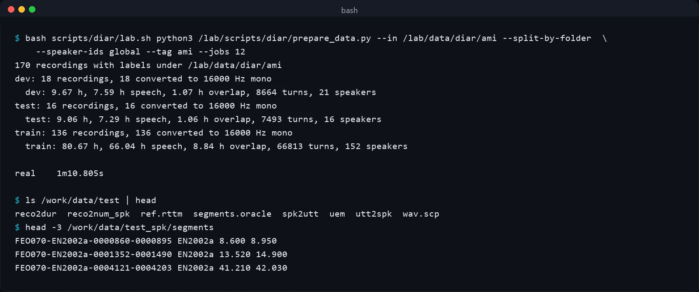
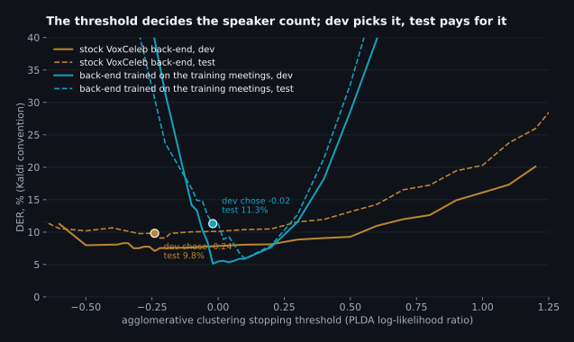
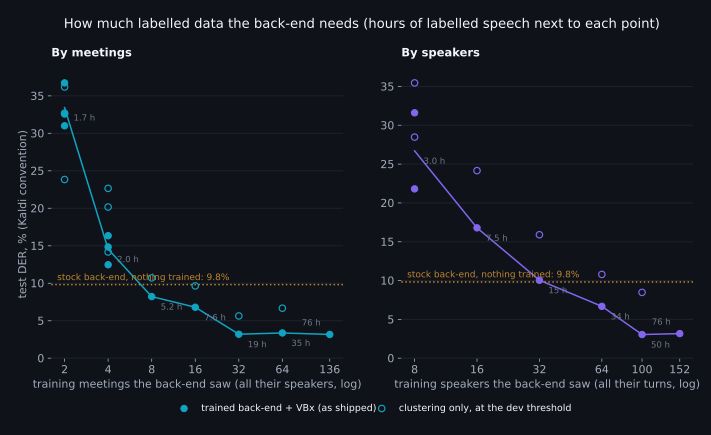
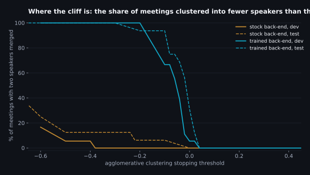
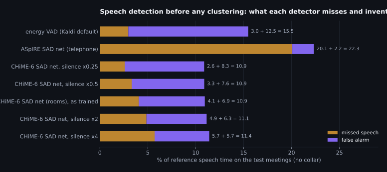
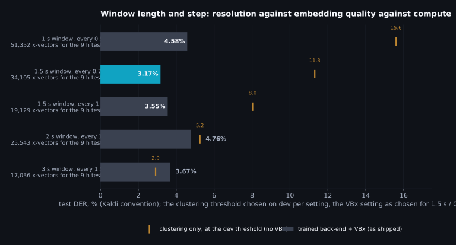
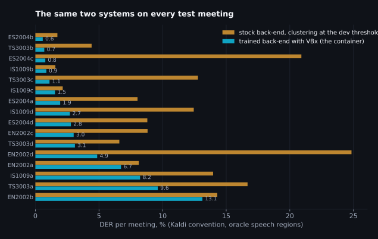
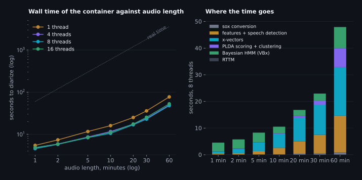
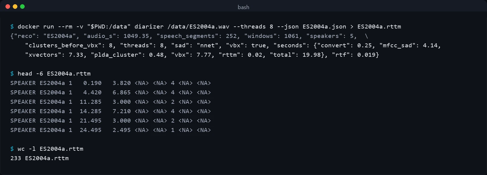

Who spoke when, on your own data: training, tuning and shipping a Kaldi speaker diarizer that runs on a CPU
Who spoke when, on a CPU, from a folder of your own recordings
Every speech product I've worked on has eventually needed the same unglamorous thing: given a recording, say who spoke when. Not what they said, that's the recognizer's job; just the timeline of speaker turns, so that a transcript can be split by person, a call can be scored per agent, or a meeting summary can attribute a decision to someone. The task is called speaker diarization, and in 2026 the loud answer to "which model" is a neural end-to-end system: pyannote's pipelines, NVIDIA's Sortformer, or an audio language model that emits speaker tags with the words. I've deployed some of those, and this post is about the quiet answer I keep coming back to when the constraints are the ones most teams actually have: the audio is in a domain the public models never saw, there's a folder of a few dozen labelled recordings and no GPU budget for training, and inference has to run on a CPU, in seconds, on a box that is also doing other things.
That answer is the classic Kaldi pipeline: a small pretrained x-vector network turns 1.5-second windows of speech into 512-dimensional embeddings, a PLDA model scores how likely two windows are to be the same person, and agglomerative clustering joins them into speakers. The network was trained by other people on thousands of speakers. The parts that get trained on your data are the ones after it, and they're cheap: the back-end fits in under a minute on a CPU, the container that runs the whole thing is 1.66 GB on disk (390 MB to download) against the 16.8 GB Kaldi image it is built from, and the whole system is arithmetic you can read. This post is the full recipe, measured on a public corpus that fits the shape of the problem, with the honest comparison to the neural systems that I think anyone choosing between them should see first.
The shape of the problem, concretely: a folder, possibly with subfolders, of audio files, each with a text file of the same name next to it. The text file has one labelled turn per line: start time, end time, speaker label. Recordings run from half a minute to an hour. That's the contract, and nothing else is assumed. To have something real to run it on I used the AMI meeting corpus, 100 hours of four-person meetings released under CC BY 4.0, converted into exactly that layout: 136 meetings for training the back-end (80.7 hours, 152 speakers), 18 for choosing thresholds (9.7 hours) and 16 held-out meetings (9.1 hours, 16 speakers, none of whom appear in training) for every number reported here. It is a hard set: the meetings are recorded in rooms, people interrupt each other, and 14.5% of the speech in the test meetings has two or more people talking at once. It is also the set pyannote, NVIDIA and the research groups report on, so the published numbers can sit next to mine.
The result in one screen
Diarization error rate (DER) is the fraction of speech time labelled with the wrong speaker, missed, or invented, and it comes in two conventions that differ by a factor of two on this data, so every table in this post shows both. "Kaldi" is the convention the Kaldi recipes and the classic papers use: a 0.25-second forgiveness collar around every reference boundary and overlapped speech excluded. "Full" is what pyannote and NVIDIA report: no collar, overlap scored, so a system that can only output one speaker at a time is charged for every second of the second speaker. The scoring section says exactly what each hides.
| System, on the 16 held-out AMI meetings | Speech regions | DER, Kaldi convention | DER, full convention | Speed |
|---|---|---|---|---|
| Pretrained x-vector network with its own VoxCeleb back-end, nothing trained (the "stock" system) | from the labels (oracle) | 9.82 | 25.06 | 48 s per hour of audio on 8 CPU threads; 8 s for a five-minute call |
| Same network, back-end trained on the 136 training meetings, clustering stopped at the threshold the dev set chose (the trap this post is partly about) | from the labels (oracle) | 11.31 | 25.53 | |
| Same, clustering stopped early and the fragments merged by the Bayesian HMM (VBx), start and hyperparameters chosen on dev | from the labels (oracle) | 3.17 | 20.97 | |
| Same, with the speech detector the container ships instead of the labels (no labels used at all at run time) | CHiME-6 SAD network | 12.32 | 31.04 | |
| NVIDIA streaming Sortformer v2 (117M parameters), run here on the same files, its own speech detection, as published / with its post-processing tuned on the same dev set | its own | 18.90 / 13.35 | 25.87 / 23.75 | 50 s per hour on the laptop GPU |
| pyannote.audio 3.1 as published on its model card (not run here; the models are gated) | its own | not reported | 18.8 | 21 min per hour on one Xeon CPU (published) |
| VBx, the best published clustering system on this split (ResNet101 x-vectors, oracle speech regions) | from the labels (oracle) | 2.10 | 18.99 | GPU for the embeddings |
Read the table as a map of what "training Kaldi on your data" buys, what it costs, and what it can't do. With the speech regions given, the trained back-end takes the stock system from 9.82% to 3.17% under the convention the classic systems are measured in, a 68% reduction, and the second row is the warning that comes with it: the same trained back-end, used the way the recipe uses it, scores 11.31%, because a PLDA trained on your data separates your speakers so sharply that the clustering threshold stops transferring from one set of recordings to the next. The tuning section has that story and the fix. The full-convention column is dominated by overlapped speech, which this family of systems does not model at all: 14.5 points of the full DER is the second speaker of every overlap, missed by construction, and no threshold gets it back. If your audio is a call with two people who rarely talk over each other, the two columns nearly coincide; if it's a meeting, they don't, and a neural system that marks overlap has a real advantage in that column. The fair comparison is the two rows that use their own speech detection: under the Kaldi convention the container and the tuned Sortformer are a point apart (12.32% against 13.35%), and under the full convention Sortformer's 23.75% against the container's 31.04% is the overlap it can mark and the speech the container's detector misses, on a GPU the container does not need. That is the honest headline. The rest of the post is how each number was produced, which choices moved it, and how the system gets shipped.
| Section | The question it answers |
|---|---|
| The other systems | What pyannote, Sortformer, the LLM-based systems and the clustering family each need to train, how fast they run, where they fail, with dated numbers from their own papers. |
| How the pipeline works | Features, speech detection, windows, x-vectors, PLDA, clustering, RTTM: what each stage learns and which of them your data can change. |
| Your data | The folder contract, the preparation script, the split that keeps test speakers out of training, and what to collect if you're starting from nothing. |
| Models to start from | The three pretrained x-vector networks and two speech detectors on kaldi-asr.org, and the feature configs that must match them. |
| Training the back-end | Re-centring, unsupervised adaptation, PLDA from your labels and LDA, each measured against the stock system. |
| Tuning | The clustering threshold and its cliff, window length, the speech detector's operating point, the per-recording PCA, and VB-HMM resegmentation. |
| Validating and testing | The two DER conventions, why the threshold must come from dev, and how much the number moves between meetings. |
| Speed and memory | Seconds per stage against audio length and thread count, what an hour of audio costs, and the neural systems on the same hardware. |
| Shipping it | The container, the model bundle, the command that turns a file into an RTTM, and the one-line JSON that tells you what it did. |
| Running it yourself | Three command blocks: use the trained model as it is, install the lab, train on your own folder step by step. |
| The checklist | What to collect and how to train for the best result, in order, with the number behind each item. |
The other systems, from their own papers
Before the recipe, the map, because the choice between systems is usually made on a benchmark table that was scored under a different convention than the one you care about. I've kept to primary sources: the papers, the model cards, and the READMEs of the repositories, each dated in the sources file. Where a number is a vendor's own claim it says so.
Clustering systems are the family this post is about: cut speech into short windows, embed each window, cluster. The embedding network is the expensive part and it's trained once, on a speaker-identification task, by whoever has the thousands of speakers. The Kaldi x-vector network from April 2018 is a five-layer time-delay network with a statistics-pooling layer and 4.2 million parameters; the one used here was trained on augmented VoxCeleb 1 and 2, which together hold 7,363 speakers. The strongest published member of the family is VBx from Brno, which swaps that network for a ResNet101 trained on the same corpora plus CN-Celeb and refines the clustering with a Bayesian HMM. On the exact AMI split used here, with the speech regions given, VBx reports 2.10% DER in the forgiving convention, 12.53% with the collar but overlap scored, and 18.99% with neither, which is the cleanest illustration I know of how much the convention decides. Kaldi's own AMI recipe, with the CHiME-6 x-vector network and a PLDA trained on the AMI training meetings, reports 24.3% full-convention DER for agglomerative clustering, 23.0% with the Bayesian HMM and 20.2% with spectral clustering, of which 14.6 points is overlap missed by construction. What the family needs from you is a labelled set of the size in this post; what it can't do is say that two people are speaking at once.
pyannote is a hybrid: a small neural network segments 10-second windows into up to three local speakers (including overlap), a speaker-embedding network embeds each local speaker, and agglomerative clustering (VBx in the newest release) joins them across the recording. Its 3.1 pipeline reports 18.8% full-convention DER on this AMI split with its own speech detection, the community-1 release of September 2025 reports 17.0%, and the company's hosted precision-2 model claims 12.9%. The segmentation and embedding networks together have about 8.1 million parameters, the pipeline is MIT licensed, and the weights are gated behind a Hugging Face form, which is why they are not in this post's measured rows. Speed is the part its authors are least loud about: the 2023 paper says 40 times faster than real time on a V100 with a Xeon for the clustering, and the only published CPU figure I found with named hardware puts pyannote 3.1 at a real-time factor of 0.35 on one Xeon Gold 6330, about 21 minutes per hour of audio. Adapting it to your data means what the 2023 paper describes: with a handful of labelled files, tune the pipeline's hyperparameters; with hours of them, fine-tune the segmentation network, which needs a GPU and the training half of the library.
End-to-end neural diarization (EEND and its descendants) emits per-speaker activity directly from a single network, overlap included. The line runs from Hitachi's 2019 EEND through EEND-EDA, which removed the fixed speaker count, to NVIDIA's Sortformer (123M parameters, CC-BY-NC-4.0), whose sort loss makes the output order the arrival order so the model can be trained inside a speech recognizer. These models are trained on 2,030 hours of real conversations plus 5,150 hours of simulated mixtures on 64 V100s, and the honest limits are on the model cards: Sortformer detects at most four speakers, the offline v1 fits about twelve minutes of audio on a 48 GB GPU (on this laptop's 8 GB a five-minute clip already took 3.6 GB and the full meetings did not fit, so the measured rows use the streaming model), and the streaming v2 that handles long audio scores 42.56% DER on the DIHARD III sessions with five to nine speakers. The 2020 EEND-EDA paper itself reports x-vector clustering beating it once a recording has five or more speakers. The data hunger is the other cost: the Brno group's 2025 DiariZen paper notes that EEND methods typically need more than ten thousand hours of simulated conversations, and that with a WavLM front end their own system trained on 14.4 hours of real data already beats the pyannote baseline trained on the whole set. DiariZen is the strongest open system I found in an independent same-scoring benchmark (13.30% overall DER across 197 hours, against 11.20% for the hosted pyannoteAI); its weights are CC-BY-NC-4.0, 1.1 GB, and the one third-party CPU figure puts it at a real-time factor of 0.30.
The LLM-based systems are two different things that get one name. The first is post-processing: Google's DiarizationLM takes the words from a recognizer and the labels from a conventional diarizer, serializes both as text, and lets a fine-tuned language model rewrite the labels. It cuts word-level diarization error by 55.5% on Fisher, on two-speaker telephone calls only, and its own paper reports that the zero-shot and one-shot versions made things worse because the model deleted chunks of the transcript. The second is the audio language model that does diarization and recognition together: SpeakerLM (2025) and IBM's speaker-attributed Granite (2026) both beat the cascades they compare to, at 7,639 hours and thousands of hours of training data respectively, and the SpeakerLM paper documents the failure mode plainly: told to change only the speaker labels, the language model "often alters the content" of what was said. That is the hallucination risk, and it is structural: a generative model has no constraint that keeps the words fixed unless someone builds one. For a diarizer that runs on a CPU and must never invent a word, they are not candidates; for the transcript-plus-speakers product on a GPU with the training data, they are the frontier.
| System | Trainable on a folder of labelled calls? | Overlap | Speakers | Weights | CPU speed (published or measured here) |
|---|---|---|---|---|---|
| Kaldi x-vector + PLDA + AHC (this post) | Yes: the back-end trains in under a minute on a CPU from the labels; the network is fixed | No, one speaker at a time | Unbounded; the count is estimated by a threshold or given | Apache 2.0, 33 MB, no gate | 48 s per hour of audio on 8 threads (measured) |
| VBx (Brno) | PLDA and thresholds, yes; the ResNet101 needs the VoxCeleb-scale training recipe | No (a separate overlap detector is bolted on in some recipes) | Unbounded | Apache 2.0 | The README warns AHC gets very slow past 30 minutes of audio; embeddings want a GPU |
| pyannote 3.1 / community-1 | Hyperparameters from a few files; fine-tuning the segmentation net needs a GPU and hours of labels | Yes, up to three local speakers | Unbounded | MIT / CC-BY-4.0, gated | RTF 0.35 on a Xeon Gold 6330 (published) |
| NVIDIA Sortformer v1 / streaming v2 | Fine-tuning with the NeMo training script on a GPU; no back-end to train | Yes | At most 4 | CC-BY-NC-4.0 / CC-BY-4.0, no gate | Not designed for CPUs; 50 s per hour on this laptop's GPU (measured) |
| DiariZen (WavLM) | Fine-tuning on a GPU; strong from tens of hours | Yes | Unbounded | CC-BY-NC-4.0, 1.1 GB | RTF 0.30 (third-party README, CPU unspecified) |
| DiarizationLM / audio LLMs | Fine-tuning a language model on thousands of hours of speaker-attributed transcripts | Depends on the base diarizer or the model | Unbounded | Various; 8B to 13B parameters | GPU; can alter the words |
Where does that leave the choice? If the recordings have real overlap and the budget has a GPU, a neural segmentation model earns its column, and the next post in this series will be the equivalent of this one for fine-tuning pyannote. If the constraints are a CPU, a domain of your own, and a labelled folder rather than a labelled thousand hours, the clustering pipeline is the one you can actually train, and the measured rows above are what that training is worth.
How the pipeline works, and which parts your data can change
The whole system is seven stages, and every one of them is a single Kaldi program reading the previous one's output. That matters for the rest of the post: when I say "the back-end was trained on your data" I mean three small files changed and nothing else did, and when the container runs, the same seven programs run in the same order on one file. Here is the order, with what each stage learns and where it learns it from.
| Stage | Program | What it does | Learned from |
|---|---|---|---|
| 1. Features | compute-mfcc-feats, apply-cmvn-sliding | 30 mel-cepstral coefficients every 10 ms from 25 ms frames, then each coefficient has its mean over a sliding 3-second window subtracted, which removes the channel and the room from the numbers before anything looks at them | Nothing; the config must match the network |
| 2. Speech regions | nnet3-compute with a SAD network, or compute-vad | Decides which frames are speech. Everything downstream only sees those regions, so a miss here is a miss in the final DER and a false alarm here becomes an invented speaker turn | A pretrained network (Fisher or CHiME-6); its operating point from your dev set |
| 3. Windows | windows.py (a copy of get_uniform_subsegments.py) | Cuts every speech region into 1.5-second windows every 0.75 seconds, so a window sits on each turn boundary from both sides. An hour of speech is about 4,800 windows | Nothing; two numbers tuned below |
| 4. x-vectors | nnet3-xvector-compute | Runs the 4.5M-parameter time-delay network on each window: five convolutional layers over time, a layer that pools the mean and standard deviation of the last one over the whole window, and two affine layers, the first of which is the 512-dimensional x-vector. The network was trained to name its 7,330 training speakers from a 3-second chunk; the embedding is what it learned to do that | VoxCeleb, by the Kaldi authors in 2018; fixed here |
| 5. Scoring | ivector-subtract-global-mean, transform-vec, ivector-normalize-length, ivector-plda-scoring-dense | Centres each x-vector, whitens it, projects it to the unit sphere, then scores every pair of windows in the recording with PLDA: the log-likelihood ratio of "same speaker" against "different speakers" under a model with a between-speaker and a within-speaker Gaussian. A 30-minute meeting is about 1,896 windows and 1.8 million pairs | Your data: the mean, the whitening matrix and the two PLDA covariances |
| 6. Clustering | agglomerative-cluster | Starts with every window as its own cluster and merges the most similar pair until the best remaining pair scores below a threshold, or until the requested number of speakers is reached. Optionally, a Bayesian HMM (VBx) then re-assigns windows using the fact that speakers persist over time | Your data: the threshold, from the dev set; the VBx hyperparameters |
| 7. Output | make_rttm.py | Turns windows plus cluster labels into speaker turns, placing the boundary between two overlapping windows of different speakers at their midpoint, and writes the NIST RTTM lines: file, start, duration, speaker | Nothing |
Two things about this design are worth saying out loud, because they explain most of the results below. First, the x-vector network never sees more than one window at a time and has no idea what a conversation is; everything that makes the output a diarization rather than a speaker-recognition score, the notion that speakers persist, that a meeting has four people and not forty, that the second half of a turn belongs with the first, lives in the scoring and clustering stages. Those are the stages you train and tune, and they are the reason the threshold behaves the way it does. Second, the pipeline assigns each window to exactly one speaker, so when two people talk at once it can only be right about one of them. On calls that costs very little; on the meetings used here it is 14.5% of the speech and it sits in the full-convention DER as missed speech no matter what the clustering does. The pyannote and Sortformer families are built around modelling that overlap; the clustering family is built around not needing to be trained on it.
"Training Kaldi on your data", then, means three concrete things, in increasing order of how
much labelled data they want. The mean and the whitening transform need only x-vectors from
your recordings, no labels at all. PLDA adaptation in Kaldi's ivector-adapt-plda
interpolates the pretrained covariances toward the covariance of your unlabelled x-vectors.
And training PLDA outright needs x-vectors grouped by speaker, which is what the label files
give: every labelled turn becomes a set of windows tagged with its speaker, and
ivector-compute-plda estimates how much x-vectors vary between people and how
much within one person from those groups. The fourth option, retraining the x-vector network
itself, is the one that needs the VoxCeleb-scale corpus: the recipe that produced this
network saw 7,330 speakers with noise, music and reverberation added, and a
folder with 152 speakers in it is not that. The sections that follow measure how
much of the gap the back-end closes on its own, which turns out to be most of it, and what
the clustering has to be told before that gain can be collected.
Your data: the folder, the script, and what to collect
Everything starts from the folder. The preparation script walks it recursively, pairs each audio file with the text file of the same name, and refuses nothing it can read: any format sox understands, any sample rate, any channel count, comma or tab or space separated labels, extra columns after the speaker (a transcript, a confidence, whatever) ignored. Lines that don't parse are counted and reported, turns that run past the end of the audio are clipped, and a recording whose label file has no usable line is skipped with a message. That tolerance isn't laziness; it is the difference between a pipeline that runs on the first export from a labelling tool and one that needs a data-cleaning weekend first. The one decision it will not make for you is what the speaker labels mean, and that decision matters more than anything else in this section.
python3 prepare_data.py --in /data/calls --speaker-ids per-recording --auto-split 80,10,10
python3 prepare_data.py --in /lab/data/diar/ami --split-by-folder --speaker-ids global # what this post ran
Speaker ids: per recording or global. A label file that says
agent and customer, or A and B, tells the
pipeline who is who inside one call and nothing across calls. A label file that says
agent_0417 tells it that the person in Tuesday's call is the person in
Thursday's. The script defaults to per-recording ids, which turns every (recording, label)
pair into its own speaker for training, and with --speaker-ids global it
trusts the labels across files. The difference is what PLDA gets to learn from. With
per-recording ids the model only ever sees one person in one room on one day, so the
within-speaker variation it estimates is "same call"; with global ids it sees the same
person across rooms and days, which is exactly the variation a diarizer has to ignore when
the agent takes the next call on a worse headset. AMI's labels are global (the four people
in a meeting series are the same four people across its four sessions), and the
152 training speakers appear in 3.6 recordings each on
average. If your data has agent ids, use them; if it doesn't, one afternoon of a labeller
linking agents across calls is the highest-value labelling work in this whole post.
The split. The numbers you will believe are the ones from recordings the
system never saw, spoken by people it never saw. The script keeps whole recordings in one
split, and with global ids it also keeps every recording that shares a speaker in the same
split, by grouping recordings into connected components over shared labels and dealing
whole components to train, dev and test by duration. Dev is not a luxury: the clustering
threshold is chosen on it, and the tuning section shows what happens to the test number
when the threshold is off by a tenth. I used the corpus's standard partition here, which has
the same property (no test speaker appears in training), and the script's
--split-by-folder honours a layout that already has train/,
dev/ and test/ subfolders.
What it writes. For each split, one 16 kHz mono PCM copy of every recording (made once with sox, so nothing downstream ever decodes an mp3 again), a Kaldi data directory for the whole recordings (the list of files, their durations, the reference speaker turns as an RTTM file, the number of speakers per recording, and the union of all labelled speech as "oracle" speech regions), and a second directory with one utterance per labelled turn tagged with its speaker, which is what the back-end trains on. It also appends one JSON row per recording to the results folder with the duration, the speech time, the overlap time, the turn count and the median turn length, because the first thing to know about a new dataset is whether the turns are two seconds or twenty.
| Split | Recordings | Hours | Speech hours | Overlap | Turns | Median turn | Speakers |
|---|---|---|---|---|---|---|---|
| train | 136 | 80.7 | 66.0 | 13.4% of speech | 66,813 | 1.5 s | 152 (44 female, 108 male) |
| dev | 18 | 9.7 | 7.6 | 14.1% | 8,664 | 1.6 s | 21 |
| test | 16 | 9.1 | 7.3 | 14.5% | 7,493 | 1.2 s | 16 |
If you are collecting the data yourself
The ablations later in the post give the quantitative version of this list; here is the qualitative one, in the order I'd spend money.
- Unique speakers before hours. PLDA estimates two covariances, and the between-speaker one needs people, not minutes. The last table of the back-end section trains it on 2 to 64 of the meetings and, separately, on 8 to 100 of the speakers: at the same hours of speech, 56 people in 16 meetings score 6.80% where 16 people score 16.79%. Every new agent is worth more than another hour of an agent you already have.
- Both sexes, all the channels you deploy on. The x-vector network is fixed; what the back-end learns is which directions of variation to ignore. If every training call is a male agent on the same headset model, the PLDA will happily decide that headset spectrum is speaker identity. AMI's training set is 44 female and 108 male speakers across three rooms, and the back-end trained on it transfers to test rooms it never saw.
- Whole recordings, not clips. The training turns are cut into 3-second windows anyway, so nothing is gained by pre-cutting; and the whole recording is what the deployed system will see, so the dev set must be whole recordings too, or the threshold will be tuned for a length distribution that doesn't exist. Long recordings are not a memory problem until they are well past an hour, and the speed section has the numbers.
- Label the turns, not the words. Start and end of each speaker's stretch of speech is enough; a boundary error of a quarter of a second costs nothing under the collar convention and little under the full one. What does cost is a missing turn, because the oracle speech regions and the PLDA training windows both come from the labels, so unlabelled speech is training data for "silence".
- Mark overlap if your tool can. The pipeline can't output it, but the labels should still contain it, both so the reference is honest and so that the DER you report is the one everyone else reports.
- A few dozen recordings is a real dataset here, and a handful is not. The stock system needs none and re-centring needs any audio from the domain, but a PLDA trained on two or four recordings is worse than the stock one; it pulls ahead at 8 meetings and is within a point of the full 136 at 32. What you cannot do with a few dozen recordings is retrain the x-vector network, and the recipe for that is in the repository for the day you have a few thousand speakers.
Models to start from
Nothing in this post trains a neural network, so the choice of pretrained networks is the choice of the ceiling. Kaldi's model page has three x-vector extractors and two speech activity detectors that matter here, all Apache 2.0, all downloadable without an account, and all small enough that the container fetches them at build time.
| Model (kaldi-asr.org id) | Trained on | Input it expects | Size | Use it when |
|---|---|---|---|---|
| VoxCeleb x-vector, m7 (2018), used in this post | VoxCeleb 1 and 2 with noise, music, babble and reverberation added: the network's output layer has 7,330 speakers | 16 kHz, 30 MFCCs, 20 to 7,600 Hz, cepstral mean normalised over 3 s | 33 MB, 4.5M parameters | Wideband audio: meetings, microphones, VoIP at 16 kHz or above |
| CallHome diarization x-vector, m6 (2018) | Switchboard and NIST SRE telephone speech, augmented the same way; ships two PLDA back-ends trained on SRE and adapted to CallHome | 8 kHz, 23 MFCCs, 20 to 3,700 Hz | 25 MB | Telephone audio. Feeding 16 kHz audio to it is a downsample away, but feeding telephone audio to the 16 kHz model is not symmetric: the band above 4 kHz that the wideband network relies on isn't there |
| CHiME-6 baseline x-vector, m12 (2019) | VoxCeleb 2 with simulated room impulse responses; back-end trained on CHiME-6 dinner parties | 16 kHz, 40 "hires" MFCCs, no energy coefficient | 15 MB, 3.1M parameters | Far-field, reverberant rooms. It is the network Kaldi's own AMI recipe uses |
| ASpIRE speech activity detector, m4 (2018) | Fisher telephone conversations with reverberation | 8 kHz, 40 hires MFCCs; the config downsamples 16 kHz input itself | 14 MB | Telephone and close-talking audio |
| CHiME-6 speech activity detector, part of m12 (2019), shipped in the container | CHiME-6 dinner-party recordings | 16 kHz, 40 hires MFCCs, one decision per 30 ms | 5 MB | Rooms, distant microphones, background chatter |
The feature configuration is not a preference; it is part of the model. Each network was
trained on one exact recipe of frame length, mel bins, cepstra, frequency range and
normalisation, and Kaldi will happily compute 23-coefficient features and feed them to a
30-input network with no error at all until the x-vectors come out as noise. The archives on
the model page are inconsistent about whether they include the config (the VoxCeleb one
doesn't), so the setup script copies each model's config from the recipe it came from into
conf/ and every later stage names it explicitly. The same goes for the
sample rate: the preparation script converts everything to the rate of the chosen model
once, and the deploy script reads the rate out of the config rather than trusting the file.
Two things the model page does not say. The x-vector networks are trained to tell training speakers apart from 3-second chunks, and their embeddings of shorter windows are noisier: the 1.5-second diarization window is a compromise between resolution and embedding quality that the tuning section measures directly. And the extractor was trained on VoxCeleb's YouTube interviews, which is a different world from a meeting room; the x-vectors still separate speakers there (the stock system gets 9.82% with oracle speech regions), but the back-end that says how far apart two x-vectors of the same person can be was estimated on the wrong world, and that is the gap the training closes.
The speech detector was the surprise of the pretrained catalogue. Diarization recipes tend to treat speech detection as a solved preliminary and use the energy-based VAD that ships with Kaldi, and on telephone audio with real silence that works. On the meetings it does not: measured against the labels on the test set, the energy VAD misses 3.0% of the speech and marks 12.5% extra, the ASpIRE network trained on telephone speech misses 20.1% (it hears room audio as non-speech), and the CHiME-6 network, trained on dinner parties, gets to 4.1% missed and 6.9% false alarm. Those numbers go straight into the DER, so the container ships the CHiME-6 detector, and the tuning section shows what its operating point is worth.
Training the back-end
Here is the training, all of it. The labelled turns of the 136 training
meetings become 99,999 x-vectors from 3-second windows (turns shorter than
1.5 seconds are dropped, longer ones are cut every 3 seconds), each tagged with its
speaker; a second set of 100,688 x-vectors comes from the energy VAD's
speech regions of the same meetings with no labels at all. Extracting them is the slow
step (17 minutes on 20 jobs) and it happens once. From those two sets,
backend.sh builds five back-ends in increasing order of how much of your data
they trust, and the most expensive of them takes 39 seconds.
# centre and whiten on your x-vectors, then PLDA from the labelled groups (backend.sh, variant "train")
ivector-mean scp:sup.scp mean.vec
est-pca --read-vectors=true --normalize-mean=false --normalize-variance=true --dim=-1 \
"ark:ivector-subtract-global-mean mean.vec scp:sup.scp ark:- |" transform.mat
ivector-compute-plda ark:sup.spk2utt \
"ark:ivector-subtract-global-mean mean.vec scp:sup.scp ark:- | transform-vec transform.mat ark:- ark:- | ivector-normalize-length ark:- ark:- |" \
plda
# the no-labels alternative: keep the VoxCeleb PLDA, pull its covariances toward your unlabelled x-vectors (variant "adapt")
ivector-adapt-plda --within-covar-scale=0.75 --between-covar-scale=0.25 stock/plda \
"ark:ivector-subtract-global-mean mean.vec scp:unsup.scp ark:- | transform-vec stock/transform.mat ark:- ark:- | ivector-normalize-length ark:- ark:- |" \
pldaEach back-end then went through the same protocol: the clustering threshold swept on the dev meetings (a coarse grid of 0.1, then 0.02 steps around the minimum), the dev minimum applied to the test meetings. That is the rule the Kaldi recipe uses and it is what a practitioner would do first, so the table shows what it gives, and the columns after it show what it hides.
| Back-end | Needs from you | Dev DER at its minimum (threshold) | Test DER at that threshold | Test DER, full | Speakers found per meeting (4 real) | Best test threshold, and its DER |
|---|---|---|---|---|---|---|
| stock: VoxCeleb mean, whitening and PLDA as shipped | nothing | 7.08 (-0.24) | 9.82 | 25.06 | 4.4 | -0.22, 9.09 |
| center: your mean, VoxCeleb whitening and PLDA | audio, no labels | 6.15 (-0.04) | 9.01 | 24.90 | 5.1 | -0.20, 8.67 |
| adapt: center, plus the PLDA covariances pulled toward your unlabelled x-vectors | audio, no labels | 5.19 (-0.14) | 8.61 | 23.49 | 3.8 | -0.00, 7.42 |
| train: your mean, your whitening, PLDA from your labelled turns | labels | 5.13 (-0.02) | 11.31 | 25.53 | 3.4 | +0.10, 5.93 |
| train-lda: train, with an LDA projection to 128 dimensions before whitening | labels | 5.58 (+0.18) | 5.81 | 21.93 | 4.7 | +0.18, 5.81 |
Read the first three rows first, because they behave. Re-centring alone, which needs no labels and takes a second, moves the stock system from 9.82% to 9.01%: VoxCeleb x-vectors and meeting-room x-vectors sit in different places in the 512-dimensional space, PLDA is a model of deviations from a mean, and moving the mean is a good part of what "domain mismatch" means here. The unsupervised adaptation, which pulls the pretrained covariances a quarter of the way toward the covariance of the unlabelled meeting x-vectors, takes it to 8.61%. Both of these are what you can do with a folder of audio and no labels, and both are within a point of their best possible threshold, because their DER-against-threshold curves are flat: the pretrained PLDA's same-speaker and different-speaker scores overlap so broadly that no cut is much better than its neighbours.
Now the trained rows. With the true number of speakers handed to the clusterer, the trained back-end gets 9.31% where the stock one gets 11.23%, and at its best test threshold it reaches 5.93%: the PLDA trained on your labels separates your speakers far better. But at the threshold the dev set chose it scores 11.31%, worse than the stock system, and the LDA variant, whose dev minimum happened to sit on the right side, scores 5.81%. Same training, same data, one number apart on the threshold axis, six points apart on test. That is not noise and it is not a bug; it is the property of a sharper PLDA, and the next section is about it, because it decides whether the training you just did is usable.

How much labelled data the back-end needs
The same protocol once more, with the back-end trained on part of the training split and everything else fixed: the threshold chosen on dev, the VBx hyperparameters as chosen in the tuning section, the 16 test meetings scored once. The one thing that cannot be carried over as a number is the VBx start, because a PLDA trained on less data scores on a different scale, so each back-end was given two candidate starts, the full system's +0.10 and its own dev threshold plus the 0.12 margin the full system had, and dev chose between them by the tuning section's rule. There are two ways of taking less. Fewer meetings, with every speaker in them, is what a team gets when it labels a few of its recordings; fewer speakers, with every turn of theirs across all 136 meetings, is what it gets when the same handful of agents appear in everything. Sizes up to four meetings and eight speakers were drawn three and two times, because at that size the draw matters as much as the size.

| Back-end trained on | Speakers | Labelled speech | Test DER, Kaldi convention (VBx) |
|---|---|---|---|
| 2 meetings, three draws | 7 / 8 / 8 | 1.8 / 2.1 / 1.4 h | 32.58 / 36.73 / 31.01 |
| 4 meetings, three draws | 16 / 16 / 16 | 1.2 / 2.3 / 2.4 h | 14.84 / 12.47 / 16.34 |
| 8 meetings | 31 | 5.2 h | 8.22 |
| 16 meetings | 56 | 7.6 h | 6.80 |
| 32 meetings | 103 | 19.2 h | 3.20 |
| 64 meetings | 119 | 34.6 h | 3.37 |
| all 136 meetings | 152 | 75.8 h | 3.17 |
| 8 speakers, two draws (their turns in 23 and 22 meetings) | 8 | 2.6 / 3.4 h | 21.81 / 31.61 |
| 16 speakers (in 51 meetings) | 16 | 7.5 h | 16.79 |
| 32 speakers (in 97 meetings) | 32 | 15.1 h | 10.04 |
| 64 speakers (in 128 meetings) | 64 | 33.7 h | 6.68 |
| 100 speakers (in 132 meetings) | 100 | 49.9 h | 3.05 |
| the stock back-end, nothing trained | 7,330 (VoxCeleb) | 9.82 |
The shape of both curves is the same and it is not gentle. A PLDA trained on two or four meetings is far worse than not training at all: a between-speaker covariance estimated from seven or sixteen people is a poor one, and the clustering it drives merges people, finding two or three speakers in every four-person meeting. The trained back-end first beats the stock one at 8 meetings (31 speakers, 5.2 hours of labelled speech), it is within a point of the full-data number at 32 (103 speakers, 19.2 hours), and the last hundred meetings buy nothing you can measure. Two rows carry a caveat the protocol demands: for 16 and 64 meetings the two candidate starts tied on dev to the hundredth of a point and the rule took the cheaper one, which on test gives 6.80% and 3.37% where the other start gives 3.22% and 2.39%; the dev set could not tell them apart, so neither can I, and the table shows the rule's choice. Read across the two halves of the table for the part that matters when you're deciding what to label: 16 meetings and 16 speakers hold almost the same hours of speech (7.6 against 7.5), and the meetings, which bring 56 people, score 6.80% where the 16 people score 16.79%; at 64 the pairing is 3.37% for 119 speakers against 6.68% for 64, from nearly the same hours (34.6 against 33.7). Hours of the same voices are nearly worthless to this model; new voices are what it learns from, and by speakers the back-end does not beat the stock one until 64 of them. That is the quantitative version of the first item in the collection list, and it is the reason the stock and adapted back-ends exist: below a few dozen speakers, use them.
Tuning: the cliff, the fix, and the other knobs
Why the trained PLDA's threshold doesn't transfer
Agglomerative clustering merges the two most similar clusters until the best remaining merge scores below the threshold. Two speakers get merged when their clusters score above it; one speaker gets split into fragments when their windows score below it. The first mistake is expensive (every second of the smaller speaker is now wrong) and the second is cheap (a fragment costs its own few seconds), so the DER curve has a cliff on the low side and a slope on the high side. With the stock PLDA the cliff is far away and gentle. With the trained PLDA it is steep, because the scores are confident, and it moves: the chart below counts, at each threshold, the share of meetings that came out with fewer speakers than they have.

The dev minimum for the trained back-end sits at -0.02, right at the top of its cliff, where the dev meetings have just stopped merging speakers. On the test meetings that threshold still merges speakers in several of them, and the number is 11.31%. A tenth of a unit higher, +0.10, gives 5.93%. There are two ways to pick a threshold that respects the asymmetry, and I ran both: take the highest threshold whose dev DER is within half a point of the minimum ("margin"), or take the minimum of the dev curve averaged over a band of 0.1 on either side, which charges a candidate for any cliff within reach ("band"). Both are one line of code and both are in the analysis script.
| How the threshold was chosen on dev | stock: threshold, test DER | adapt: threshold, test DER | train: threshold, test DER | train-lda: threshold, test DER |
|---|---|---|---|---|
| dev minimum (the recipe's rule) | -0.24, 9.82 | -0.14, 8.61 | -0.02, 11.31 | +0.18, 5.81 |
| highest threshold within 0.5 points of the dev minimum | -0.20, 9.10 | -0.10, 8.19 | +0.06, 8.15 | +0.22, 6.42 |
| minimum of the dev curve averaged over a 0.1 band | -0.22, 9.09 | -0.14, 8.61 | +0.08, 6.81 | +0.12, 9.57 |
| the best test threshold (not available in practice) | -0.22, 9.09 | -0.00, 7.42 | +0.10, 5.93 | +0.18, 5.81 |
Neither rule is safe for both trained back-ends, because the cliff moves by more than a tenth of a unit between the dev and the test meetings and no rule that only sees dev can know where it will be. What the table does establish is the direction: being too high is cheap, being too low is a disaster, and the fix is not a cleverer threshold. It is to stop clustering deliberately early, with more clusters than speakers, and hand the fragments to something that knows how to merge them.
The fix: stop early, then let the Bayesian HMM merge
Agglomerative clustering knows nothing about time: the window at 12:00.0 and the window at
12:00.75 are as unrelated to it as windows an hour apart. The Bayesian HMM from Brno that
the recipe ships as vb_hmm_xvector.py (VBx) adds exactly what clustering
lacks: a hidden Markov model over the sequence of x-vectors whose states are speakers,
with a high probability of staying with the current speaker from one window to the next,
and the PLDA's between-speaker subspace as the model of what a speaker looks like.
Initialised from the clustering labels, it re-assigns every window, merges clusters the
HMM cannot tell apart, and drops the ones that end up with nothing. It can merge; it cannot
split. So the start it needs is an over-clustered one, and the threshold stops being a knife
edge and becomes a margin. Its cost grows with the square of the clusters it starts from, so
the lab and the container both cap the start at 30: a recording the threshold leaves
with more clusters is clustered again to 30 before the HMM sees it. At the start the
dev set chose no meeting here had more than 13, so the cap never touched
the shipped setting. It applied in two places, both named where they come up: with the
energy VAD, where the noise windows of one dev meeting scored so alike that the threshold
left every one of its 2,458 windows as its own cluster and the uncapped
HMM ran for two hours without finishing, and for the back-ends trained on a handful of
meetings in the data-size table, whose scores are so steep that the same start leaves
nearly every window alone. The matrix below is the trained back-end with VBx started from
four thresholds, with three sets of the HMM's hyperparameters (the loop probability, and
the two scales that weight the acoustic evidence and the speaker prior).
| VBx started from the clustering at | Hyperparameters (loop, Fa, Fb) | Dev DER | Test DER, Kaldi | Test DER, full | Speakers per meeting |
|---|---|---|---|---|---|
| -0.02, the dev minimum (some speakers already merged) | 0.85, 0.2, 1 (the DIHARD defaults) | 4.12 | 11.10 | 25.65 | 3.3 |
| -0.02 | 0.9, 0.3, 3 | 3.41 | 10.90 | 25.43 | 3.3 |
| +0.10 (about 8 clusters per meeting) | 0.85, 0.2, 1 | 4.00 | 4.05 | 22.10 | 4.3 |
| +0.10 | 0.9, 0.3, 3 | 2.94 | 3.17 | 20.97 | 4.1 |
| +0.20 (about 23 clusters per meeting) | 0.85, 0.2, 1 | 3.12 | 3.39 | 21.11 | 4.2 |
| +0.20 | 0.9, 0.3, 3 | 2.94 | 3.36 | 20.85 | 4.1 |
| +0.30 (about 84 clusters per meeting) | 0.85, 0.2, 1 | 3.62 | 3.63 | 21.35 | 4.2 |
| +0.30 | 0.9, 0.3, 3 | 2.94 | 2.95 | 20.45 | 4.1 |
Three things in the matrix. Started from the dev-minimum clustering, VBx cannot undo the merged speakers and the test number stays near 10.90%. Started from an over-clustered labelling it lands between 2.95% and 3.36% on test whichever of the three higher starts it is given, with the speaker count back at four, which is the steadiness the threshold alone could not give. And the third hyperparameter set, the one Kaldi's own AMI recipe uses (loop 0.5, Fa 0.05), collapsed every meeting to two speakers here (dev DER above 40%); the hyperparameters are not universal and the dev sweep is not optional. The dev set chose the start at +0.10 with loop 0.9, Fa 0.3, Fb 3, and that is the system every later number in this post uses: 3.17% on the test meetings, down from 9.82% for the stock system, 20.97% under the full convention against the stock system's 25.06%, and better than the 23.0% Kaldi's AMI recipe reports for the same architecture with its own settings. The cost is 8 seconds of numpy for an hour of audio, which the speed section counts.
Speech regions: the detector and its operating point
Everything so far used the speech regions from the labels, which is how the classic results are reported and how a system is developed, but not how it is deployed. With the three pretrained detectors from the models section in place of the labels, the same trained back-end with the same VBx setting gives:
| Speech regions from | Missed / false alarm before clustering, % | Test DER, Kaldi | Test DER, full | of which missed / false alarm / confusion |
|---|---|---|---|---|
| the labels (oracle) | 0 / 0 | 3.17 | 20.97 | 14.6 / 0 / 3.17 |
| energy VAD | 3.0 / 12.5 | 21.17 | 36.77 | 17.1 / 10.7 / 6.32 |
| ASpIRE SAD network (telephone) | 20.1 / 2.2 | 22.86 | 37.57 | 31.7 / 1.9 / 2.70 |
| CHiME-6 SAD network (rooms), silence likelihood halved | 3.3 / 7.6 | 13.06 | 31.46 | 17.4 / 6.5 / 4.82 |
| CHiME-6 SAD network, silence likelihood as trained (the recipe's decoding, which the container reproduces line for line) | 4.1 / 6.9 | 12.32 | 31.04 | 18.0 / 5.9 / 3.98 |
| CHiME-6 SAD network, silence likelihood doubled | 4.9 / 6.3 | 12.77 | 30.29 | 18.7 / 5.4 / 4.22 |

The detector is worth more than any other single choice after the back-end: between the
best and the worst row the DER changes by more than the whole back-end training did. The
energy VAD, which the recipes default to, invents 12.5% extra speech on these
recordings and every invented second becomes a speaker turn; the telephone network misses
a fifth of the speech; the CHiME-6 network, trained on dinner parties, is the one to ship.
The recipe decodes the network's two outputs with a small duration model: silence must
last at least 30 ms, speech at least 0.3 s and at most 10 s, and every switch between
them costs a fixed penalty. The container carries that decoder as a hundred lines of numpy
rather than the recipe's FST tools, and I checked the two on all 18 dev and
16 test meetings: 8,044 speech segments on the test set,
identical to the hundredth of a second. Run end to end inside the container on one test
meeting, features computed afresh, 245 of its 252
segments came back identical and 7 had a boundary moved by up to
150 ms, which is the random dither Kaldi adds to the waveform before
the features: its sequence depends on where a file sits in a batch. That check earned its
place. My first version of
the decoder ran on the network's output repeated to every 10 ms frame instead of on the
frames it actually emits (one every 30 ms), which counted the acoustic evidence three
times against each switch penalty and, at the same silence scale, cut the speech into
46% more and shorter segments. Decoded that way, at the
operating point dev chose for it, the same network's output scored
15.86% on the test meetings against 12.32%
for the recipe's decoding. A speech detector that is almost the one you measured is a
different speech detector.
The decoder's one knob, --sil-scale, multiplies the silence likelihood, and
sweeping it on dev is the one-line way to move the operating point for a new domain
without retraining anything. Here the silence likelihood left as trained won, by 8.00%
on dev against 8.01% and 8.18% for the halved and
doubled scales, which by this post's own standard for what a gap means is three versions
of the same detector; the sweep matters when the domain is not the one the network was
trained on, and it costs nothing to run. The container's number is therefore
12.32% Kaldi convention, 31.04% full,
with 18.0 points of missed speech (mostly the overlap) and
5.9 of false alarm.
Window length and step
The recipe's 1.5-second windows every 0.75 seconds are a compromise between three things: a longer window gives the x-vector network more speech and a better embedding, a shorter one resolves speaker changes more finely, and the step decides how many windows there are and therefore how long the x-vector stage, the scoring and the clustering take.

The recipe's setting won on dev, and it won on test. With the back-end, the threshold rule and the VBx setting held fixed, 1.5-second windows every 0.75 seconds give 2.94% on dev and 3.17% on test from 34,105 x-vectors. Halving the window to one second every half second gives 4.58% on test from 51,352 x-vectors, half as many again to compute and more than twice the pairs to score: the embeddings of one-second windows are noisier, the clustering alone falls apart on them (10.80% on dev at its own best threshold) and the HMM recovers most of that but not all. Two seconds every second gives 4.76%, three seconds every 1.5 gives 3.67%, and the recipe's window with no overlap, 1.5 seconds every 1.5, gives 3.55% from 19,129 x-vectors, which is the cheap setting if a long recording has to fit in memory. Two things the chart hides. The plain clustering likes long windows: at three seconds every 1.5 it scores 2.91% on test at the dev threshold without any HMM, the best clustering-only number in this post, because a three-second window is what the network was trained on. And the HMM's loop probability is a per-step quantity: it was chosen on dev for a 0.75-second step, and at that long window with a 1.5-second step it makes the clustering worse on dev (5.35% against 3.44%), so the fair test of the sparse settings would re-tune it per step. I didn't, because the recipe's setting had already won on dev with everything else fixed, and that is the rule this post follows.
The per-recording PCA
Before scoring, the recipe projects each recording's x-vectors onto their own principal
components and keeps enough of them to retain a fraction of the energy, 10% by default
(--target-energy 0.1). The idea is that within one recording most of the
variation that isn't speaker identity is shared (the room, the microphone) and a
recording-specific projection removes it. Measured with everything else fixed, the
default is the right one on dev, and it is not a fragile choice: keeping 10% of the energy
gives 2.94% on dev and 3.17% on test after VBx,
30% gives 3.12% and 5.33%, and 90%, which keeps nearly
the whole space, gives 3.45% and 2.82%. Dev picks 10%.
On test the three are within the noise of 16 meetings and the 90% setting
happens to land lowest, which is exactly the kind of number a dev set exists to stop you
reporting. What does move is the plain clustering underneath. At 30% the dev threshold
sits at -0.10 and the test DER at that threshold is 13.13%, the
cliff of the first part of this section in another guise; at 90% the threshold has to
drop to -0.50, because the scores of a nearly unprojected space are spread
wider. The threshold is in score units and the projection changes the units, so the fixed
VBx start of +0.10 is a far more over-clustered start at 90% than at 10%,
which is why that run took 1.7 times as long and, as the matrix above predicted, was none
the worse for it.
Validating and testing: what the number means
Every DER in this post comes from NIST's md-eval.pl, the same Perl script the
Kaldi recipes call and the one bundled in the dscore toolkit, run on the
system's RTTM against the reference RTTM built from the label files. The script finds the
best one-to-one mapping between the system's cluster ids and the reference speakers, then
counts three kinds of time: reference speech with no system speaker (missed), system
speech with no reference speaker (false alarm), and speech assigned to the wrong speaker
(confusion). DER is the sum divided by the total reference speech. What the two conventions
change is which seconds count.
- Kaldi convention (
md-eval.pl -1 -c 0.25): a quarter-second on either side of every reference boundary is not scored, and any region where two reference speakers overlap is not scored either. This is what the Kaldi recipes, the x-vector papers and the CALLHOME literature report, and VBx calls it "forgiving". It measures what the clustering did, because the two things it excludes are the two things a one-speaker-at-a-time system cannot get right. - Full convention (
md-eval.pl -c 0): no collar, overlap scored. This is what pyannote and NVIDIA report. On this test set it adds 14.5 points of missed speech to every system in this family before a single window is clustered, plus whatever the boundaries cost, and it rewards systems that output two speakers at once. - The middle (
-c 0.25without-1): collar, overlap scored. Some papers use it; the results file has it for every run, and the tables show the two ends.
The convention alone moves the same system from 3.17% to 20.97%. That is not a rounding difference and it is why I distrust any comparison table that doesn't state its flags. When someone quotes a diarization number, the questions are: collar or not, overlap or not, oracle speech regions or the system's own, oracle speaker count or estimated, and tuned on what. The stock-versus-trained comparison in this post holds all five fixed; the comparison with the neural systems changes the third, and says so.
Why every number is a dev-then-test number
Every setting in this post that could be tuned was tuned on the dev meetings and then applied, once, to the test meetings: the clustering threshold, the VBx start and hyperparameters, the speech detector's operating point, the window, the PCA energy. The tuning section shows what that discipline costs and what it catches. With the trained PLDA the dev-chosen threshold lost 5.38 points against the best test threshold, a gap nobody would have seen by tuning on test; the same protocol is what made the VBx start a decision rather than a lucky number. When the tables show a "best test" column it is there to size the gap, not to be reported. The test set was touched by nothing but the final scoring runs.
How much the number moves between recordings
A single DER over nine hours hides how uneven diarization is. The per-meeting scores of the final system range from 0.6% to 13.1% (Kaldi convention), with a median of 2.8%; the worst meeting is EN2002b, where 24% of the speech is overlapped and the confusion alone is 13.1%. Two practical consequences. First, a dev set of a few recordings is enough to choose the threshold but not enough to claim a number to a decimal place: with 16 test meetings the standard error of the mean DER is about 0.9 points, so differences smaller than a point between systems in the tables above are within what a different set of meetings would produce, and I've only drawn conclusions from gaps larger than that. Second, when a deployed system disappoints on one recording, the first thing to check is the speech detector's output on that file, not the clustering; nearly all of the spread here is in how many windows each meeting has near a boundary, and how much of it is overlap.

Speed and memory: what an hour of audio costs
The speed claim for this family of systems is usually made loosely ("runs on a CPU"), so here it is made precisely, with the deployed container, on the laptop's i7-14650HX, with the file lengths a product actually sees. The pieces are the first one, two, five, ten, twenty and thirty minutes of one test meeting (four speakers throughout, so the clustering problem is the same shape at every length) and a full hour made from the longest test meeting plus the start of the next. Every point is the median of 2 runs, taken back to back, on a machine that was otherwise quiet; the first post in this series has the long version of why single timings on this laptop are not to be trusted.

Three numbers to keep. A five-minute call takes 8.3 seconds on 8 threads (11.7 on one), an hour of meeting takes 48.0 seconds (77.2 on one), and the threads buy less than you'd think: the speed-up from one to eight is 1.4x on the call and 1.6x on the hour, all of it from the x-vector stage, which goes from 46 s to 20 s on four threads and no faster on eight or sixteen (23 s), while every other stage is one single-threaded program. Per stage, on the hour at 8 threads: features and speech detection 13.8 s, x-vectors 18.2 s, PLDA scoring and clustering 7.1 s, the Bayesian HMM 7.9 s, the RTTM under a second. The real-time factor on 8 threads is 0.0133, about 75 times faster than real time, against the published 0.35 for pyannote 3.1 on a server Xeon; the difference is the difference between a 4.5M-parameter network run on 1.5-second windows and two larger networks run on every frame, and it is the whole reason this pipeline is the one that fits on the box that is also doing other things.
The memory story is the clustering stage, and it is the one thing that grows faster than the
audio. The x-vector network's memory is fixed; the PLDA score matrix and the agglomerative
clusterer's queue of candidate merges both grow with the square of the number of windows.
Measured inside the container, the hour-long piece (3,899 windows) peaks at
807 MB in its largest process, the clusterer, which comes to about
111 bytes per pair of windows; two hours would be four times that, and a
three-hour recording would be close to the 8 GB this laptop gives its containers. So: for anything under an hour, one call; past that,
either raise the window step (the tuning section shows that 1.5 s every 1.5 s costs
0.4 points of DER on the test meetings, 2.5 on dev, and
halves the window count), or diarize in overlapping
chunks and link the clusters, which the VBx README also recommends past 30 minutes and
which Kaldi's clusterer offers directly through --first-pass-max-utterances.
None of this depends on how long your training recordings were; the training turns are cut
into 3-second windows regardless.
The neural systems on the same hardware
To put the speed in context I ran NVIDIA's streaming Sortformer v2 on the same 16 meetings on the laptop's RTX 5060 GPU: 50 seconds per hour of audio, a real-time factor of 0.014, with 2,814 MB of GPU memory at peak. That is about the same as the container's CPU speed, on hardware the container doesn't need. On a CPU the same model, with its 117M-parameter Fast-Conformer encoder over every frame, is not a practical option and NVIDIA doesn't present it as one. pyannote's own paper puts its GPU speed at 40 times real time and the CPU figure above at three; the community-1 release quotes 31 seconds per hour of AMI audio on an H100. All of those are fine numbers for a batch pipeline with a GPU in it. The container's number is for the case with no GPU in it.
Shipping it: one container, one command, one RTTM
The lab side of this post ran inside the official Kaldi image with a working volume of features and x-vectors. None of that is needed to run the system on a new file. What is needed is fourteen Kaldi programs, their shared libraries, sox, the two networks, and the files the training produced. The deploy image is built in two stages: the first is the Kaldi image, which downloads the networks from kaldi-asr.org and copies out the programs and libraries (stripped of debug symbols; the Kaldi libraries go from 342 MB to 14 MB, and the MKL kernels for AVX2, AVX-512 and generic CPUs are the biggest thing left); the second starts from Debian slim and adds sox, python3 with numpy and scipy for the VB-HMM step, and your back-end. The result is 1.66 GB on disk and 390 MB compressed, against the 16.8 GB of the full Kaldi image, and it runs without the recipe scripts, without a GPU, and without network access.
docker build -t diarizer -f scripts/diar/deploy/Dockerfile --build-arg BACKEND=results/diar/backend .
docker run --rm -v "$PWD:/data" diarizer /data/call.wav > call.rttm
docker run --rm -v "$PWD:/data" diarizer /data/call.wav --num-speakers 2 --threads 8
docker run --rm -v "$PWD:/data" diarizer /data/meeting.mp3 --vbx false --sad energy --json meeting.json # the recipe's defaults, if you want them
The entry point is a bash script of about a hundred lines, and it is the same seven stages as the lab, each
one a program call you can read. It converts whatever it's given to 16 kHz mono with sox,
computes MFCCs, runs the CHiME-6 network and the recipe's duration-constrained decoder for speech
regions (or the energy VAD with --sad energy), normalises the cepstra over the whole recording, cuts the
windows, splits them into as many lists as there are threads and runs one x-vector
extractor per list, then centres, whitens, length-normalises, scores every pair, clusters
at the threshold the dev set chose (or to the speaker count you pass), re-clusters to
30 if the threshold left more clusters than that, refines the labels with the
Bayesian HMM using the hyperparameters in vbx.conf, and writes the RTTM to
standard output. On standard error it writes
one JSON line with what it did and how long each stage took, which is the line the speed
section was built from:
{
"reco": "ES2004a",
"audio_s": 1049.35,
"speech_segments": 252,
"windows": 1061,
"speakers": 5,
"clusters_before_vbx": 8,
"threads": 8,
"sad": "nnet",
"vbx": true,
"seconds": {
"convert": 0.25,
"mfcc_sad": 4.14,
"xvectors": 7.33,
"plda_cluster": 0.48,
"vbx": 7.77,
"rttm": 0.02,
"total": 19.98
},
"rtf": 0.019
}
The model bundle
Everything the container knows lives in /model, and it is worth knowing what
is in there because it is what you version, and what you replace when you retrain.
| File | What it is | Where it came from | Size |
|---|---|---|---|
final.raw, extract.config, min_chunk_size, max_chunk_size | The x-vector network and the instruction to read the embedding from its sixth layer instead of the speaker softmax | kaldi-asr.org model m7, at build time | 33 MB |
mfcc.conf, vad.conf | The feature recipe the network was trained with (rate, bins, cepstra, band) and the energy VAD settings | The VoxCeleb recipe in the Kaldi image | under 1 KB |
sad/final.raw, sad/post_output.vec, sad/frame_subsampling_factor, sad/mfcc_hires.conf | The speech activity network, its output priors and its feature recipe | kaldi-asr.org model m12 | 5 MB |
backend/mean.vec, backend/transform.mat, backend/plda | The trained part: the centring vector, the whitening (or LDA plus whitening) matrix, and the PLDA model | backend.sh on your labelled x-vectors; exported from the lab volume | 3.0 MB |
threshold, vbx.conf, sad.conf | The clustering stopping threshold, which with VBx on is the deliberately early stop the HMM refines from; whether VBx runs and with which loop probability and scales; the speech detector's silence scale | The dev sweeps | five numbers |
windows.py, vad_to_segments.py, sad_decode.py, make_rttm.py, vbx.py, VB_diarization.py, segmentation.pl, sad_to_segments.py | The glue: window cutting (a copy of the recipe's), the two speech-region decoders (the network's is the recipe's decoding graph as a hundred lines of numpy, checked against it segment for segment), the RTTM writer (the recipe's), and the Bayesian HMM (the Brno code the recipe ships, with a 60-line reader for Kaldi's binary PLDA file so it doesn't need kaldi_io) | This repository | 60 KB |
Retraining, then, is: run the preparation script on the new folder, run feats.sh,
xvec.sh and backend.sh in the lab container, sweep the threshold and
the VBx setting on the dev split, export the files, rebuild the image. The whole loop on this corpus, with
the x-vectors of the 136 training meetings already extracted, is the
39 seconds of backend.sh plus the sweep. The x-vector
extraction of the training set is the slow part (17 minutes for
80.7 hours of audio on 20 jobs) and it happens once per set of recordings, not
once per experiment, which is why the ablations in this post were cheap.
Three deployment details that the lab version hides. The lab parallelises across
recordings, because Kaldi's scripts split data by "speaker" and in a diarization data
directory the speaker is the recording; a single file would get one job. The container
instead splits the windows of the one file across threads, which is where its
--threads speed-up comes from. The lab computes the clustering threshold on
scores that were centred with the mean of the training x-vectors; the container uses the
same mean.vec, so the threshold transfers as-is, and the JSON line's speaker
count is the first thing to look at when it doesn't. And the container is deterministic:
the same file gives the same RTTM every time, byte for byte, whatever the thread count,
because the one random element in the seven stages, the dither the feature extraction
adds to the waveform, is seeded the same way on every run. That is a smaller property
than accuracy, and it is the one that makes regression testing a diarizer possible at all.
Running it yourself: the trained model, the lab, your own folder
Everything above is reproducible from the repository, and there are three different things a reader might want from it, in increasing order of effort. All three need Docker and nothing else: no Kaldi build, no Python environment, no GPU. On Windows the commands run in Git Bash; on Linux or a Mac they run as they are. Give the Docker VM 8 GB if you can; the lab's defaults were chosen for that.
Use the model from this post as it is
The image builds from a clean checkout: the first stage downloads the two networks from
kaldi-asr.org, the second copies in the back-end trained on the 136 AMI
meetings from results/diar/backend/. It expects speech at 16 kHz or above
(anything sox reads is converted), was tuned on English meetings in rooms, and writes
one RTTM per file.
git clone https://github.com/inboxpraveen/ggml-inference-lab && cd ggml-inference-lab
docker build -t diarizer -f scripts/diar/deploy/Dockerfile --build-arg BACKEND=results/diar/backend .
docker run --rm -v "$PWD:/data" diarizer /data/call.wav --threads 8 --json call.json > call.rttm
docker run --rm -v "$PWD:/data" diarizer /data/call.wav --num-speakers 2 # when you know the count
docker run --rm -v "$PWD:/data" diarizer /data/call.wav --sad energy --vbx false # the plain recipe
Read the JSON line on standard error before you read the RTTM: speakers and
clusters_before_vbx tell you whether the threshold transferred to your audio,
and speech_segments whether the detector found the speech at all. Telephone
audio at 8 kHz is the one case this image is the wrong tool for: the network wants the
band above 4 kHz, and the CallHome model (m6) with its 8 kHz features is the right
starting point, wired into the lab scripts as --rate 8000 and the
m6 model name but not measured in this post.
Install the lab
docker build -t diar-lab -f scripts/diar/Dockerfile.lab scripts/diar # official Kaldi CPU image + numpy, scipy, sox
bash scripts/diar/fetch_models.sh # five kaldi-asr.org archives, about 100 MB
bash scripts/diar/lab.sh setup # Kaldi working tree in the volume diar-work
lab.sh runs one command inside that image with the repository mounted at
/lab and the working tree (features, x-vectors, scores) in a Docker volume,
so the thousands of small files never cross the bind mount. Every script in the post is
invoked the same way, and bash scripts/diar/lab.sh bash gives you a shell in
it when something needs looking at.
Train on your own folder
The contract from the data section: a folder, subfolders allowed, each recording as any audio file sox reads with a text file of the same name next to it, one labelled turn per line as start, end, speaker. Then, in order, with what each step gives you:
- Prepare.
bash scripts/diar/lab.sh python3 /lab/scripts/diar/prepare_data.py --in /lab/data/diar/mine --auto-split 80,10,10 --speaker-ids global. Copy or symlink the folder underdata/first (or mount it withDIAR_DOCKER_OPTS="-v /my/audio:/audio"). Use--speaker-ids per-recordingif your labels are not linked across files, and--split-by-folderif you already havetrain/,dev/andtest/. Read the summary it prints: recordings, hours of speech, overlap, turns, speakers per split. If the test split shares a speaker with training the script tells you; fix that before anything else. - Features and speech regions.
for s in test dev train; do bash scripts/diar/lab.sh bash /lab/scripts/diar/feats.sh $s --nj 8; done, with--njno larger than the recordings in the split. This computes the MFCCs, the sliding mean normalisation, the energy VAD and both speech detectors, and it is where the speech-detection table of the tuning section comes from for your data (python3 /lab/scripts/diar/sad_quality.py test vad nnet nnet12). - x-vectors. The training turns and the unlabelled training speech at 3-second windows, then the dev and test splits at the recipe's windows: the three
xvec.shlines in the repository's README. This is the slow step (17 minutes for 80.7 hours here on 20 jobs), and it happens once. - Back-ends, sweeps, VBx.
NJ=4 PAR=1 bash scripts/diar/run_experiments.sh backends sweep vbxbuilds the five back-ends, sweeps the threshold on dev and applies it to test for each, then runs the VBx matrix.python scripts/diar/analyze.py sweep vbxprints the tables of the back-end and tuning sections for your data; the numbers you want to see are a "train" row well below the "stock" row after VBx, and speakers per meeting near the true count. - The detector instead of the labels.
SADS=nnet12 NJ=4 PAR=1 bash scripts/diar/chain.sh sadscores the same system with the CHiME-6 detector's regions, which is the number the container will actually give. - Export, build, check.
EXAMPLE_DIR=data/diar/mine EXAMPLE=<a recording the preparation put in the test split> bash scripts/diar/finalize.sh export image example sadcheck determinismwrites the dev-chosen back-end, threshold, VBx setting and silence scale toresults/diar/backend/, rebuilds the image from them, runs it on one of your test recordings (results/diar/data_stats.jsonlsays which split each recording went to), and checks that its speech regions match the lab's. Thendocker runas above, on any machine.
Budget for the whole loop on a few dozen hours of audio: an hour or two of wall time, most of it the x-vector extraction and the sweeps, none of it needing you at the keyboard. If a step writes no rows, the drivers stop rather than run the next step on nothing; the lab's README lists the traps I met, most of them Docker Desktop's memory.
The checklist: what to collect, and how to train for the best result
This is the whole post folded into the order I'd follow with a new dataset, with the number behind each item so you can decide which ones apply to yours.
- Count speakers before you count hours. The back-end learns from new voices, not from more minutes of the same ones: 56 people in 16 meetings scored 6.80% where 16 people with the same hours scored 16.79%, and 32 speakers on 15.1 hours of speech were still no better than the stock system. When you commission labelling, ask for more people, not longer files.
- Know the threshold below which training hurts. A PLDA trained on two or four recordings was worse than not training at all (31% to 37% from two, 12% to 16% from four, against the stock system's 9.82%). The trained back-end pulled ahead at 8 recordings and 31 speakers, and reached the full-data number at 32 recordings and about a hundred speakers. Below that, ship the stock or the adapted back-end, which need no labels.
- Link speakers across recordings. Global ids (the same agent is the same label in every call) give the PLDA the within-speaker variation across rooms and days that a diarizer must ignore. If your labels don't have them, an afternoon of linking agents across calls is the best-paid labelling hour in this post.
- Cover what you deploy on. Both sexes, every channel, headset and room you will see, because the back-end learns which directions of variation to ignore and will happily learn "this headset" as a person. Keep every test speaker out of training, and every recording that shares a speaker on the same side of the split; the preparation script does this for you.
- Label whole recordings, turn by turn, overlap included. Start, end, speaker is enough; word-level timing is not needed. Unlabelled speech becomes training data for silence, so a missing turn costs more than a boundary that is a quarter-second off. Mark overlap even though this system cannot output it, so your DER means what everyone else's means.
- Hold out a dev set of whole recordings, a dozen or more. Every knob in this post was chosen on it: the clustering threshold, the VBx start and hyperparameters, the speech detector's operating point. With 18 dev meetings the choices transferred; with 16 test meetings the standard error is about 0.9 points, so don't read decimals from sets that size.
- Train the full back-end: mean, whitening, PLDA from the labelled turns. 39 seconds on a CPU. The unsupervised steps (re-centring, PLDA adaptation) are the fallback for the no-labels case, worth a point between them here.
- Never ship the dev-minimum threshold on its own. The trained PLDA's cliff moved by more than a tenth between dev and test and cost 5.38 points. Start the clustering a tenth or so above the dev minimum, let VBx merge the fragments, sweep VBx's loop probability and scales on dev (one published setting collapsed every meeting to two speakers here), and keep the cap of 30 starting clusters.
- Treat the speech detector as the biggest knob after the back-end. Between the best and the worst detector the DER moved by more than the whole back-end training. Use the CHiME-6 network for rooms and distant microphones, sweep its silence scale on dev, and reserve the energy VAD for clean telephone audio with real silence.
- Keep the recipe's windows. 1.5 seconds every 0.75 won on dev and test; go to 1.5 every 1.5 only when an hour-plus recording has to fit in memory, and re-tune VBx if you change the step. Leave the per-recording PCA at 10%.
- Report both conventions, and the per-file spread. The same system reads 3.17% or 20.97% depending on the collar and the overlap rule; on two-person calls the two nearly coincide, on meetings they never will. The worst recording here was 13.1% against a median of 2.8%, and when a deployed file disappoints, look at the detector's output first.
- Check the shipped system against the measured one. The only real bug in this post was a container that decoded speech almost the way the lab did. Run the lab's segmentation and the container's on the same file, and the same file twice; both checks are one command each (
finalize.sh sadcheck determinism). - What to expect. On meeting audio with a labelled folder of this size: around 3.17% with the speech regions given and 12.32% with the detector, Kaldi convention; 8 seconds for a five-minute call and 48 for an hour on 8 CPU threads; a 390 MB image. If you need overlap or have a GPU and thousands of hours, the neural systems of the second section are the other branch, and the next post takes it.
What I couldn't verify, and what I'd do next
- pyannote was not run. Its segmentation model and pipelines are behind a Hugging Face access form, and I wanted this post to run from a clean checkout. Its numbers here are the model card's, on the same AMI split and under the full convention, which is the convention that favours it; the comparison script in the repository runs it with a token in one command, and I'd expect it to land between Sortformer and the published 18.8%.
- One corpus, one bandwidth. Everything measured is 16 kHz meeting audio with four speakers. The telephone path (the CallHome network, 8 kHz features, the ASpIRE detector) is wired into the scripts and described, not measured; a two-speaker call is an easier clustering problem and a harder speech-detection one, and the numbers will differ in both directions.
- Overlap is not modelled. 14.5% of the test speech is overlapped and every system in this family misses the second speaker of it by construction. The Kaldi AMI recipe includes an overlap detector that can be trained from the same labels; it would move the full-convention column and nothing else, and it is the first thing I'd add.
- The x-vector network is from 2018. The gap between this post's 3.17% and VBx's 2.10% on the same split with the same speech regions is mostly the embedding network (a ResNet101 trained on more data, with more augmentation) and secondly the Bayesian HMM run on its terms. Swapping the extractor is a change of one file and one feature config; the back-end training in this post applies unchanged to any embedding that Kaldi's tools can read.
- Small sets, single draws. The test set is 16 meetings, which puts about 0.9 points of standard error on a DER near 3.17; the data-size ablation has one draw per size above four meetings and eight speakers. Differences of a point between rows in the tables are inside what a different draw would produce, and the text only leans on the larger gaps.
- Sortformer was run as published and with its post-processing tuned on dev. Its offline v1 does not fit hour-long files on an 8 GB GPU (the paper's authors chunk it at twelve minutes on a 48 GB card), so the streaming v2 stands in for the family; it also had no chance to learn this corpus's speech regions the way the CHiME-6 detector did. A fine-tuned Sortformer on the 80.7 training hours would be the fair contest and needs a GPU and the NeMo training script.
- Timings are from a laptop that was also doing other things. The benchmark ran in a quiet window with paired repetitions, and the medians are what the text quotes; the first post has the full account of how much single numbers on this machine move.
- The next post is the other branch of the decision: taking the 80.7 labelled hours to the pyannote pipeline, fine-tuning its segmentation model on a GPU, and measuring what the overlap-aware neural system buys on the same test set, at what cost, against the container from this post.
Closing note
Start from the folder. 136 labelled recordings went in, and what came out was three files of 3.0 MB, a threshold, and a container that turns an audio file into an RTTM in 8 seconds for a five-minute call and 48 seconds for an hour, on CPU threads a web server would not miss. The pretrained network with its own back-end scored 9.82% on the held-out meetings; the back-end trained on the folder scored 3.17%, with the threshold chosen without looking at them, and 12.32% with the speech detector doing the job the labels did during development. Under the convention that scores overlap the same system reads 31.04%, and that number is the honest place to compare it with the neural systems, which model the overlap and need the GPU and the thousands of hours to do it.
What the training did is small and specific: it told a fixed embedding network's scores which directions of variation belong to the room and which to the person, using turns that a labeller marked with two timestamps and a name. Everything that made that work is in the preparation script's insistence on global speaker ids, the dev split that the threshold is chosen on, the 0.02-step sweep that the trained PLDA's cliff demands, and the speech detector's operating point being tuned on the same data. None of it needs a GPU, none of it takes longer than the x-vector extraction that happens once, and all of it is arithmetic that can be read. The clustering family's limit is real and measured here: it cannot say two people are speaking. Inside that limit, on a CPU, from a folder, it is the system I'd ship, and this post is the evidence.
Resources & Links
The toolkit, the models and the data:
Kaldi and the kaldiasr/kaldi images (rebuilt July 2025); the VoxCeleb x-vector model (m7), the CallHome diarization model and recipe (m6) and the CHiME-6 baseline models (m12) on kaldi-asr.org; Kaldi's AMI diarization recipe (egs/ami/s5c); the AMI Meeting Corpus (CC BY 4.0) via the diarizers-community/ami mirror and the AMI-diarization-setup references; VoxCeleb 1 and 2, MUSAN and RIRS_NOISES, the corpora behind the x-vector network; md-eval.pl and dscore for scoring.
The clustering family:
X-vectors: robust DNN embeddings for speaker recognition (Snyder et al., 2018); Diarization is hard (Sell et al., 2018); Bayesian HMM clustering of x-vector sequences (VBx) (Landini et al., 2022) and the VBx repository; WeSpeaker's diarization recipe and 3D-Speaker's.
The neural systems:
pyannote.audio 2.1: principle, benchmark and recipe (Bredin, 2023), the powerset segmentation loss (Plaquet and Bredin, 2023), the speaker-diarization-3.1 and community-1 model cards and the precision-2 announcement (vendor); multi-scale diarization with dynamic scale weighting (Park et al., 2022), Sortformer (Park et al., 2024) with its v1 and streaming v2 model cards; EEND (Fujita et al., 2019) and EEND-EDA (Horiguchi et al., 2020); DiariZen (Han et al., 2025) and its repository; DiarizationLM (Wang et al., 2024), SpeakerLM (2025) and speaker-attributed ASR with speech-aware LLMs (IBM, 2026); Benchmarking diarization models (2025) and Pushing the limits of end-to-end diarization (2025), the two same-scoring comparisons with CPU timings.